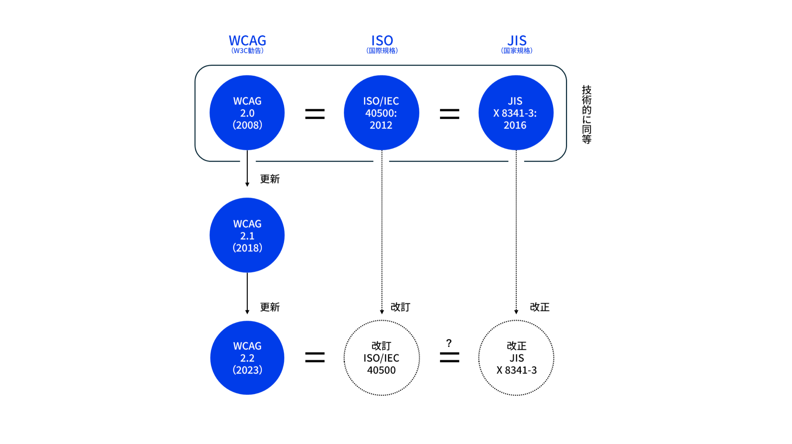

おことわり
今回の発表では以下の条件に基づいた内容を紹介します。あらかじめご了承ください。
- 2025年10月時点での調査・検証結果の紹介
- モデル性能差によって結果に差異がある可能性はあります
- 主にAIエージェントを活用したコード改善観点での紹介

Vue Fes Japan Online 2022ではVue.jsでアクセシブルなコンポーネントをつくるためにという発表、Vue Fes Japan 2023では画面遷移から考えるNuxtアプリケーションをアクセシブルにする方法話をさせていただきました。
今年のVue Fes Japanでは、Vue.jsやNuxtだけに限らない汎用的なWebアクセシビリティ改善手法についてを発表していきます。
本題に入る前に、まず「Webアクセシビリティ」とは何か、前提を揃えたいと思います。
「アクセシビリティ」は、よく「ユーザビリティ」と混同されがちですが、ユーザビリティが「特定の状況での使いやすさ」を指すのに対し、アクセシビリティは「使える度合いや状況の幅広さ」を指します。

特定のターゲット層だけでなく、高齢者、障害者、初心者、外国人など様々な状況にある人たちの「使えない」状態から「使える」状態に引き上げる、誰もがアクセスできたり使えるようになるがアクセシビリティの目的です。そしてそれをWebで実現していくことがWebアクセシビリティと呼ばれるものです。
Webアクセシビリティを実現するために対応できるということは以下のものが挙げられます。
これらをどう進めるか。その指針となるのが「WCAG」です。
WCAGは、W3Cが策定するウェブコンテンツのアクセシビリティのガイドラインです。現在の最新勧告版はWCAG 2.2となっております（2024年12月勧告）。4つの原則（知覚可能、操作可能、理解可能、堅牢）に基づき、3つのレベル（A、AA、AAA）で達成基準が定められています。海外では法的基準のものとして採用されており、日本では、JIS規格（JIS X 8341-3:2016）が、このWCAGと「技術的に同等」の国家規格として定められています。

ここで重要な点として共有したいのが現在のJIS規格は改正作業が進んでおり、WCAG 2.2をベースにしたものに更新される予定があるということです。今年9月に国際規格であるISOが改訂され、新しいJISは2026年夏ごろに公示される見込みです。ですので、これからWebアクセシビリティに取り組む場合はWCAG 2.2をベースとしてチェックすることをお勧めします。
従来の改善方法は、WCAGの達成基準に基づいた方針策定、支援技術でのチェック、当事者インタビュー、アクセシビリティに配慮されたデザインシステムとして提供するなどがありました。
しかしこれらには始めるための準備に時間がかかり、なかなか手がつけられなかったり、専門家が居ないと進めづらいという現場も多いのではないでしょうか。私自身もその悩みとぶつかることがありました。
それでは今回の本題でもある「生成AIを活用したWebアクセシビリティ改善」について紹介していきます。
おことわり
今回の発表では以下の条件に基づいた内容を紹介します。あらかじめご了承ください。
生成AIを使ってアクセシビリティ改善を考える前に、そもそも生成AIはアクセシブルなコードを書くことができるのか、プロンプトの精度でどれくらい変わるのか？というのが気になりました。
このテーマに関連しそうな情報を探してみたところ、LLMはアクセシブルなコードを生成できるのかを研究した論文が見つかりましたので紹介いたします。
この研究では、人間が書いたコードとLLMが生成したコードとでどちらがアクセシビリティ違反が少ないかを比較・検証しました。対象となったのは現在進行形で更新があり、注目されているOSSのWebサイトソースコードが選ばれました。この中にはVue.jsの公式ドキュメントサイトも選ばれています。
違反の検証としてIBMのアクセシビリティチェッカーとQualWebというチェックツールが選ばれました。これは他チェックツールと比較して多くの違反を検出できるものだったからです。ルールはWCAG2.1を基準としてチェックが行われました。
プロンプト戦略（指示の出し方）についてもいくつかの手法を提案しています。
これらのプロンプトで確認した結果として、まず結果としていずれも人間が書いたコードよりもよりアクセシビリティ違反を下げられる結果となりました。ですがそれ以上に、非常に重要な示唆が得られました。
実は Naiveの特にアクセシビリティの指示を与えず単純にコード生成を行う という仕組みが最もアクセシビリティ違反が少ないことが示されました。逆に Few-Shotのアクセシビリティにまつわる正誤コード例を提示してから生成を行う が最もアクセシビリティ違反の多い結果となっています。
なぜこのような結果となったのでしょうか。
Naiveでは基本的なWebアクセシビリティ改善、例えばHTMLを活用することやカラーコントラストの整備などは具体的な指示をせずとも行ってくれるようです。一方、アクセシビリティにまつわる内容をコンテキストを含めることで既存のコードベースの構造と衝突し、過剰なアクセシビリティ情報を適用して違反が逆に増えてしまったというのが挙げられています。
ただ、Naiveの手法があるだけでWebアクセシビリティの問題が改善できているわけではありません。具体的にはSVG要素への名前付けやラベルが一意であるようにするなど、複雑なアクセシビリティ要件には対応しきれていませんでした。
ここからより精度を高める方法はないのでしょうか。
そこでその問題を解消するために「FeedA11y」という新しい手法を作成しました。これは「Reason-Act（ReAct）」と呼ばれる、LLMが推論と行動を繰り返すプロンプトのフレームワークを活用したものです。

FeedA11yの仕組みについて紹介します。
まず指示内容をもとに「Generator LLM」が、アクセシビリティの指示を含めないクリーンなコードを生成します。
次に「Optimizer LLM」という別のLLMが、そのコードをレビューし、「Accessibility Report」を作成します。
そしてその内容がGeneratorにフィードバックが送られ、修正を促すというこのサイクルを行います。これを約2〜3回繰り返していきます。
これによって既存のプロンプトよりも最もアクセシビリティ違反が少ない結果を出すことに成功しました。
この研究結果から得られる有用な手法としてコード生成時にはアクセシビリティの指示を含めず、生成後にレビューと修正を繰り返すというのが分かりました。
最初からアクセシブルなコードを生成するよりも入念なレビューをすることが大事、ということがわかったので生成AIを活用してレビューするためのテストケースを作成していきます。
Gaudiy社の例のようなチェックシートを生成させておくことが有用です。この例ではWCAGの達成基準を元にどのチェックリストが埋められているかを確認できるようになっているようです。生成AIにWCAGの達成基準を読み込ませて必要なものをリストアップしてもらい独自のチェックシートを生成しておきましょう。
さらにテストケースの具体性を高めるために、当事者のペルソナを設定したテストケースを用意した「インクルーシブなペルソナ拡張」というデザイン支援ツールを使ってみてもよいかもしれません。
これはウェブサイトやウェブアプリケーションの設計プロセスにおいて、障害当事者のペルソナのコンテキストを付加することでプロジェクトへのアクセシビリティへの意識づけにつながります。
例えば「視覚障害（全盲）」のペルソナについて。彼らの障壁は「視覚情報が理解できない」「スクリーンリーダーが必要」「キーボード操作が必須」などがコンテキストとしてあります。
このペルソナに基づき、Playwright Agentで生成してもらったテストケースを紹介いたします。たとえば「ページ読み込みと基本ランドマーク（header, mainなど）の存在確認」について、前提や手順・期待結果や成功条件・失敗条件が含まれたテストケースを生成できます。
さて、ここまでAIの活用法を見てきましたが、Webアクセシビリティの改善において最も気をつけるべき点があります。
それが WAI-ARIA です。
WAI-ARIAは、スクリーンリーダーといった支援技術に対してHTMLだけでは表現しきれないアクセシブルな情報を補完する技術仕様です。WAI-ARIAはアクセシビリティツリーを補完する役割を持ちます。
WAI-ARIAを使う事例として、HTML要素だけでは表現しきれない複雑なUIやその状態変化、フォームバリデーションのような動的な通知を行う際に活用します。またHTML構造が変えられない状況において、上書きすることもあったりします。
さきほどの研究でも紹介がありましたが、生成AIは複雑なアクセシビリティ要件、特にWAI-ARIAにまつわる実装をさせると誤りが多くなります。
これは生成AIがコードの「文脈」に沿ったARIAのユースケースや実装方法を正しく理解・学習できていない可能性があるからです。この誤りはWAI-ARIAを正しく理解できていない人間がコードを書く際にも同じような失敗は見受けられるため、納得できる結果かと思っています。
この対策として、WAI-ARIAの仕様書をベースとしたRAGを用意することや、仕様を理解したMCPを活用することが考えられます。
今回はすぐ実践できるMCPサーバーの活用についてを取り上げてみます。
正しいWAI-ARIAの情報を取り扱うことのできるARIAバリデーション用MCPサーバーの「aria-validate-mcp-server」を作ってみました。
これはアクセシビリティのESLint Pluginで使用されているaria-queryというライブラリを内部で用いています。WAI-ARIA 1.2の仕様に対応したroleや属性やARIA属性が、どの値を扱えるかをチェックすることができます。
例えば「checkboxロールが扱える値は？」と聞くと、「必須属性はaria-checked で、値はtrue,false,mixedです」と、仕様に基づいた正しい答えを返してくれるようになります。
こうした知識をMCPサーバーとして組み込むことで、間違ったARIAの実装を防ぐねらいがあります。
WAI-ARIAを使用する際に必要となるID属性の管理も重要です。これはAIに生成を任せるのではなく、各フレームワークが提供する一意のIDを生成するAPIを活用するように指示するほうが向いています。React、Vue.js、Svelteにはそれ相当のAPIが存在しています。これらを活用するよう、AGENTS.mdなどに事前に指示しておきましょう。
また「WAI-ARIAを使うべきか、最新のHTML/CSSで対応すべきか」の判断も重要です。
WAI-ARIAはアクセシブルな情報を与える上で重要なものですが、それを使わずにHTML/CSSで表現できることがより重要となってきます。
そのためにモダンブラウザでどのWeb APIが安定して使用できるかを知るBaselineの情報を確認できる「baseline-mcp-server」も作成してみています。
各社プロダクトでの利用環境は異なると思うので、プロダクトごとでの扱うブラウザ範囲と相談しつつ、提示されたHTML/CSSが適応できるかどうかを調べてみてください。
WAI-ARIAを使った場合は実際にアクセシビリティツリーがどう影響しているかをチェックすることも必要です。例えばaria-hiddenによって意図せずコンテンツが消えていないかというのは、状況にもよるためコードだけ見ても良いか悪いかが分かりません。
この内容を確認するためにPlaywright MCPを使用しましょう。Playwright MCPの画期的なものの１つとしてアクセシビリティツリーを見て実行しているという点があげられます。これを活用し、全体のアクセシブルネームがどうなっているか、要素同士の関係性がどうなっているかをチェックすることができます。
ちなみに最近発表されたChrome DevTools MCPにはまだアクセシビリティツリーを読み取る機能が備わっていません[1]。そのためPlaywright MCPを使用することをお勧めします。
ほかにもPlaywright MCPではキーボード操作（タブキー遷移）でのチェックやフォーカス順序の確認など、E2Eテスト観点でアクセシビリティのチェック指示が可能なので活用していきましょう。
そしてもちろん生成AIだけに頼るのでなく、従来からのガードレール、つまりLinterとテストも設定しておくことが重要です。
各種ESLint Plugin、Biome、Oxlintなどでアクセシビリティチェックすることも忘れずにしましょう。
Reactであればeslint-plugin-jsx-a11y、Vue.jsであればeslint-plugin-vuejs-accessibility、Svelteはsvelte-check、
HTMLのLintとしてMarkuplintも活用し、E2Eテストでは@axe-core/playwrightなどを活用し、生成されたコードの品質チェックをしていきましょう。
ここまでで発表してきた内容をまとめていきます。
これらの手法を意識することで、生成AIによる精度の高いWebアクセシビリティ改善が期待できます。ぜひ参考にして明日からの開発に生かしていただきたいです。
さて、ここまで生成AIを使ってアクセシビリティ改善を効率化する、具体的なテクニックについてお話ししてきました。
最後に生成AIとアクセシビリティに関して私が思うことについてを喋っていこうと思います。
現代のWebアクセシビリティ改善でなくてはならない存在であるaxeの開発するDeque社もアクセシビリティチェックとAIと関連させた「Axe AI」プロジェクトを発表しています。axe MCPサーバーやAI搭載のaxe DevTools Extension、Slackといったチャットツールと連携してアクセシビリティにまつわる相談ができるaxe Assistantなどが開発されています。
Deque社でのアクセシビリティテストのこれからについては以下のことを目指しています。
「専門家でなくても100%のアクセシビリティテストを可能にすること」[2]
これはテストを100％自動化することではなく、アクセシビリティ改善にかかる時間を短縮し、より仕事をやりやすくすることを目的としています。
このような効率性を考えたツール開発に対して、Webアクセシビリティの改善を考える立場のものとして期待しているところはあります。
AIの進化は凄まじく、AIにすべて任せればアクセシビリティ問題は解決するのでは？と思うかもしれません。実際、Be My EyesのようなAIと障害当事者への問題解決に関連するプロダクトは存在しています。チャットUIによってほか全てのUIは不要になるのではないか、という声も耳にします。
ですが、本当にそのままでよいのでしょうか？
私はチャットUIだけですべてが賄えるとは思いません。AIへの意図通りの指示にもスキルが必要です。また自らで触れて操作することで理解につながるという体験も必要です。
ここで重要となるのは、直接の操作でも、AIによる操作でも、使える「選択肢」を用意できることだと私は考えます。AIによって楽になる部分とそうでないものは存在し続けていくと思います。
今日ご紹介した生成AIのテクニックは、あくまで『手段』としての話です。
私たちが立ち返るべきは、「なぜアクセシビリティをやるのか？」「誰に何を提供しているのか？」という「意図」の部分です。この意図を考えるのは、人間にしかできません。
私たちは生成AIを活用しながら、アクセシビリティに関する正しい知識を身につけていきながら、組織全体でその改善サイクルを回していけるようにする必要があります。
生成AIは、アクセシビリティ改善のハードルを劇的に下げてくれる可能性を秘めています。
この強力な『武器』を手にし、私たち開発者がアクセシビリティの知識と何を作るかの『意図』を持って向き合うことで、真にアクセシブルなWebアプリケーションものへとつながっていくのではないかと思っています。
生成AIを武器に、アクセシブルなものを、ここにいる皆さんと共に作っていきましょう。
haribooooom, hk_it7, kubosho, magi1125, takanorip, ymrl